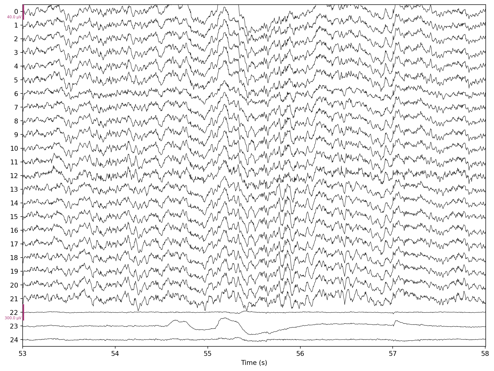
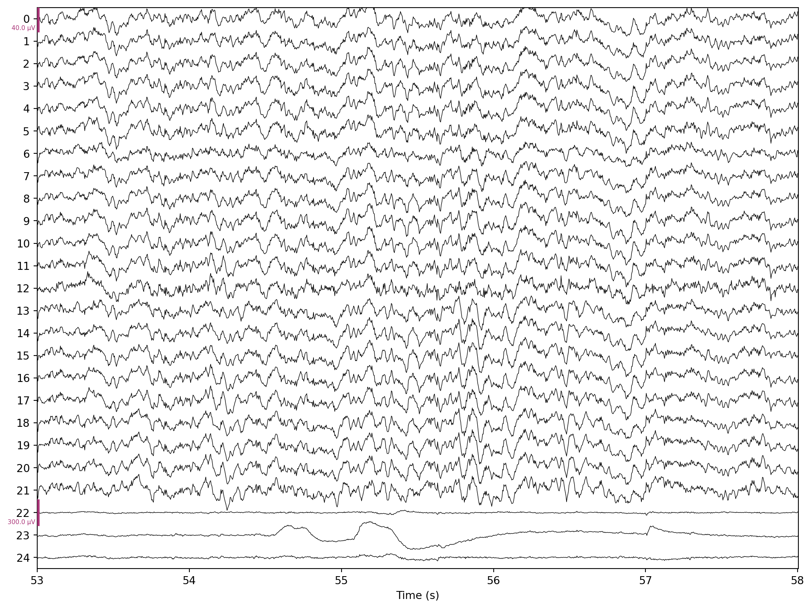

import mne
import numpy as np
from scipy.io import loadmatRemoving eye activity from EEG via regression
Python
MNE
EEG
EOG
Artifacts
EEG signals often contain eye activity (movement and/or blinks), which usually needs to be removed before performing EEG analysis. In this post, I show how to get rid of ocular artifacts using a regression-based approach.
Background
Eye movement and eye blinks are clearly visible in the ongoing EEG. These ocular artifacts are produced by changes in the electrical dipole between the front and back of the eyes. Usually, it is important to minimize the influence of eye activity on the recorded EEG.
There are two popular methods available to remove ocular artifacts, namely approaches based on (multivariate linear) regression and approaches based on independent component analysis (ICA). In this post, I will focus on the regression method and explain the ICA-based variant in another post.
The regression-based approach in its simplest form dates back to Hillyard and Galambos (1970), who used data from a pre-experimental calibration run containing voluntarily produced ocular artifacts to estimate regression coefficients on the EEG. More than a decade later, Gratton, Coles, and Donchin (1983) improved upon this procedure in two ways. First, they used EOG recordings from the experimental data (the same data that needs to be corrected) instead of a calibration run. Second, they estimated regression coefficients separately for eye movements and eye blinks.
Despite its age, removing ocular artifacts via linear regression remains a popular approach because it works well in many situations. However, it is important to keep in mind that dedicated EOG electrodes placed close to the eyes must be available. Also, if an EOG electrode fails during the recording session, the whole method breaks down. Furthermore, it is reasonable to assume that EOG electrodes will also pick up some amount of brain activity (after all, the brain sits right behind these sensors). Therefore, this method will likely remove brain activity in addition to ocular artifacts. On the plus side, there is no restriction on the minimum number of EEG electrodes required – the regression-based approach can clean even single-channel EEG recordings.
Note
MNE now provides a built-in method for removing artifacts via regression (check out the tutorial for more information). However, since the method is rather simple, it is also instructive to implement it manually, which is what we will do in this post.
Implementation
Data preprocessing
To demonstrate this method, we will download a publicly available EEG data set from the BNCI Horizon 2020 website. Specifically, we’ll use participant A01T from data set 001-2014 (go ahead and download this file and put it in your working directory if you want to follow along). The description states that the third run contains calibration eye movements. We will use these to estimate regression coefficients to correct EEG data in the subsequent fourth run.
As always, we start with some setup boilerplate. Since the example data is stored in a MAT file, we need to import the scipy.io.loadmat() function. Besides mne, we will also use numpy in our analysis.
Loading the example data is pretty straightforward:
mat = loadmat("A01T.mat", simplify_cells=True)This gives us a dictionary containing the data in a nicely organized way. Let’s check the available dictionary keys:
mat.keys()dict_keys(['__header__', '__version__', '__globals__', 'data'])The EEG data is stored in mat["data"] as a list, where each list item corresponds to a run. For example, mat["data"][0] contains data from the first run, mat["data"][1] corresponds to the second run, and so on. Each run is represented by a dictionary, and the EEG data is stored under the "X" key.
We are interested in EEG data from the calibration run (third run, list index 2) and the experimental run (fourth run, list index 3), which we name eeg1 and eeg2 (note that we also multiply by 10-6 to scale the signals from microvolts to volts). This results in two NumPy arrays:
eeg1 = mat["data"][2]["X"] * 1e-6 # run 3 (calibration)
eeg2 = mat["data"][3]["X"] * 1e-6 # run 4 (experiment)The next step is not strictly necessary, but we’ll convert eeg1 and eeg2 into mne.io.Raw objects. This will give us the ability to quickly generate plots of raw EEG traces before and after ocular artifact removal.
info = mne.create_info(25, 250, ch_types=["eeg"] * 22 + ["eog"] * 3)
raw1 = mne.io.RawArray(eeg1.T, info)
raw2 = mne.io.RawArray(eeg2.T, info)The arguments to mne.create_info() set the number of channels in the data (25), the sampling frequency (250 Hz), and the channel types (the first 22 channels are EEG whereas the last three channels are EOG). We have to transpose the arrays, because MNE expects channels in rows and samples in columns.
Estimating regression coefficients
We are now ready to estimate regression coefficients to remove the influence of ocular artifacts on the recorded EEG. It turns out that converting the three monopolar EOG channels EOG1, EOG2, and EOG3 to two bipolar channels is a good idea. One way to go about this is to multiply the three monopolar EOG signals with a suitable matrix to generate two bipolar channels EOG1–EOG2 and EOG3–EOG2. If you happen to have four monopolar EOG channels (which is also a common EOG recording setup), you can convert them into a horizontal and a vertical bipolar channel, respectively.
bip = np.array([[1, -1, 0], [0, -1, 1]])
raw1_eog = bip @ raw1[22:, :][0]
raw2_eog = bip @ raw2[22:, :][0]The @ operator computes the matrix product. Note that we have performed this conversion for both runs raw1 and raw2 separately. Furthermore, indexing a raw object returns a tuple with the requested data and associated time values. We only need the data, and [0] selects just the first entry in the returned tuple.
For shorter notation, we also create separate names for the EEG signals (the first 22 channels) of both runs:
raw1_eeg = raw1[:22, :][0]
raw2_eeg = raw2[:22, :][0]Now comes the important part where we perform ordinary least squares to estimate the linear regression coefficients. Note that we actually solve for all EEG channels simultaneously (or in other words, there are several dependent or response variables). We also have several independent or predictor variables in the form of EOG channels. Such a model is referred to as a multivariate (more than one response variable) multiple (more than one predictor variable) regression model.
If we denote our response variables (the EEG signals) as \(Y\), our predictor variables (the EOG signals) as \(X\), and the regression coefficients as \(B\), we can write the linear model as follows:
\[Y = X B\]
We can then compute the least squares solution for \(B\) by left-multiplying with the Moore-Penrose inverse \(X^+ = (X^T X)^{-1} X^T\):
\[B = X^+ Y = (X^T X)^{-1} X^T Y\]
In Python code, this looks as follows (note that we need to transpose our signals, because we have our channels in rows, whereas the equation assumes that they are in columns):
b = np.linalg.inv(raw1_eog @ raw1_eog.T) @ raw1_eog @ raw1_eeg.TAlternatively, we can use the numerically more stable np.linalg.solve() to compute the regression coefficients:
b = np.linalg.solve(raw1_eog @ raw1_eog.T, raw1_eog @ raw1_eeg.T)As a quick sanity check, let’s inspect the shape of our regression parameter matrix b:
b.shape(2, 22)This makes sense, because there are two EOG channels (predictors) and 22 EEG channels (responses).
Now all we need to do to remove ocular artifacts from new data is to subtract the estimated EOG influence raw2_eog.T @ b from the measured EEG. We’ll create a new raw3 object to store this corrected data.
eeg_corrected = (raw2_eeg.T - raw2_eog.T @ b).T
raw3 = raw2.copy()
raw3._data[:22, :] = eeg_correctedVisualizing results
Let’s see if the method worked. First, we plot a segment of the original raw2 data with some prominent eye activity. For this visualization, we set the number of simultaneously visible channels to 25, the start of the plot to second 53, and the duration to 5 seconds.
raw2.plot(n_channels=25, start=53, duration=5)
We produce the same plot for the corrected raw3 data:
raw3.plot(n_channels=25, start=53, duration=5)
If you look closely, the method successfully removed ocular artifacts clearly visible around second 55.
Code
Code
import mne
import numpy as np
from scipy.io import loadmat
mat = loadmat("A01T.mat", simplify_cells=True)
eeg1 = mat["data"][2]["X"] * 1e-6 # run 3 (calibration)
eeg2 = mat["data"][3]["X"] * 1e-6 # run 4 (experiment)
info = mne.create_info(25, 250, ch_types=["eeg"] * 22 + ["eog"] * 3)
raw1 = mne.io.RawArray(eeg1.T, info)
raw2 = mne.io.RawArray(eeg2.T, info)
bip = np.array([[1, -1, 0], [0, -1, 1]])
raw1_eog = bip @ raw1[22:, :][0]
raw2_eog = bip @ raw2[22:, :][0]
raw1_eeg = raw1[:22, :][0]
raw2_eeg = raw2[:22, :][0]
b = np.linalg.solve(raw1_eog @ raw1_eog.T, raw1_eog @ raw1_eeg.T)
eeg_corrected = (raw2_eeg.T - raw2_eog.T @ b).T
raw3 = raw2.copy()
raw3._data[:22, :] = eeg_corrected
raw2.plot(n_channels=25, start=53, duration=5, title="Before")
raw3.plot(n_channels=25, start=53, duration=5, title="After")